35岁的这个11月，我竟挑战了这么多“第一次”
一、引子
一个很少被提及的常识，随着年龄的增长， 我们对客观时长的判断会随年龄发生变化 ，对时间的流逝逐渐不敏感。
常常会感慨，一周过的也太快了、一个月就这么过去了、怎么突然年底了！
在 11 月的最后一天，回顾这个月，依然是不得不感慨，时间过得真快啊，明天便是 2025 年的最后一个月。
中年人的 11 月，依然是波澜不惊，但仔细一想，发现居然 挑战了 多个第一次，都在战战兢兢中顺利完成。
二、解锁 多个“第一次”
35 岁， 正是闯的年纪！

1️⃣ 第一次日更超 90 天
去年尝试过日更30 天，完成 30 天的日更计划之后便没有再尝试新的日更计划。
今天是第 92 天，在 8 月底定100 天日更计划的时候，没想过能坚持这么多天，在已经发布的 29 篇文章中，阅读量过万的文章是 5 篇。
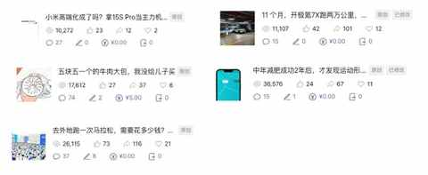
掐指一算，12 月 8 日，将是我连续日更的第 100 天。
2️⃣ 第一次月跑量超 300km
306.1km，跑 21 次，耗时 28 小时 58分。
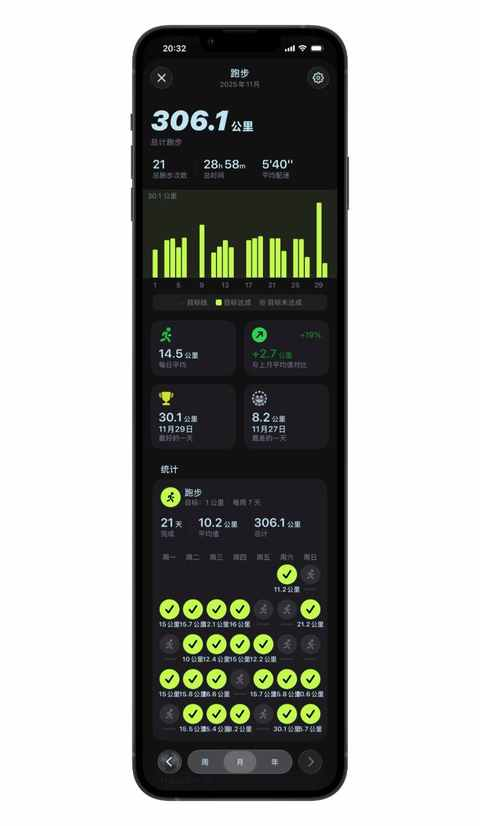
最难的是昨天第一次跑30km，后 10km 掉速比较多，靠能量胶和意志力苟住。
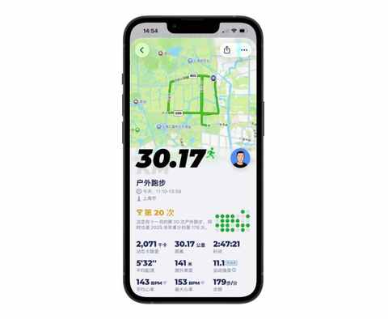
首个长距离30km，月跑量300km，均顺利完成
在 11 月完成 300km 的跑量之后，也解锁了连续 3 个月跑量破 200km。
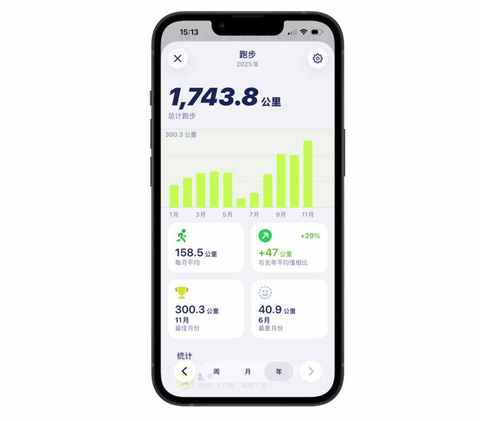
3️⃣ 第一次修冰箱
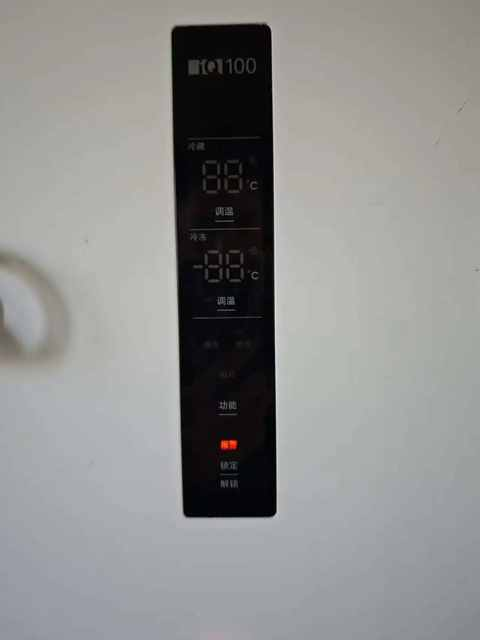
放在去年，都不敢想，我会找售后，光速决定自己来修冰箱。
虽然说是修，其实是换一个配件，在淘宝买了之后，商家给到视频教程，然后我按照视频来操作，然后冰箱顺利恢复运转。
冰箱过保，坏了售后太贵？自己换配件搞定！
虽然因为不熟练，把本来 20 多分钟的活儿，折腾成了一个多小时的事情，但成就感是真实的，冰箱恢复运转也是真实的。
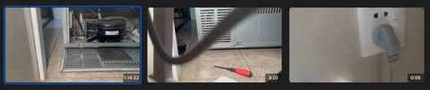
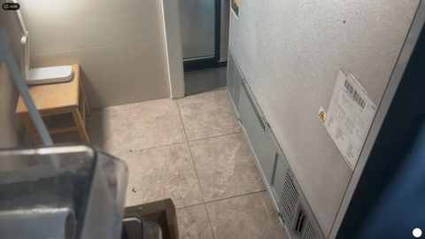
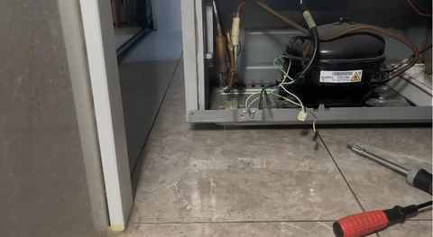
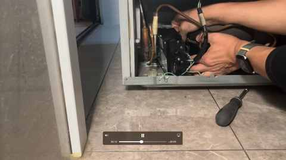
4️⃣ 第一次在省会合肥跑马拉松
作为安徽人，第一次在合肥跑马拉松，这次报名的半马项目。
在骆岗公园与2.5万人一起起跑！我的合肥“首马”小事记
参加马拉松比赛，跑在城市的主干道上，是和开车截然不同的，感受一个城市的方式。
一个长居省外中年人的合肥印象：记2025的年第4次合肥行
比赛时间是 11 月 9 日，在查看相册的时候发现，在 2024 年的 11 月 9 日的下午，在另一个省会城市，南京的江心洲参加了人生中的第一个半马比赛。
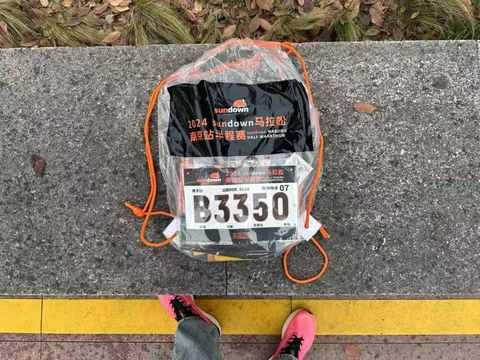
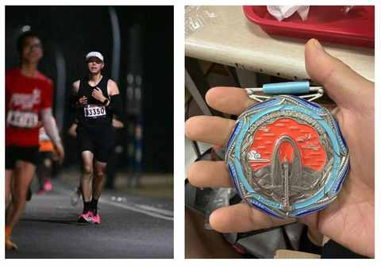
不同的时空，同样的鞋子、帽子、运动手表、 21.0975公里 。
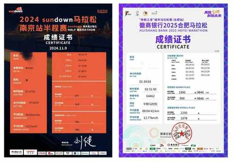
5️⃣ 第一次年度用车里程超 2w 公里
之前 7 年多，用车比较多的时候，也才 1.5w 公里，现在 2025 年还有一个月才结束，用车里程已超 2w 公里，首保也已经完成。
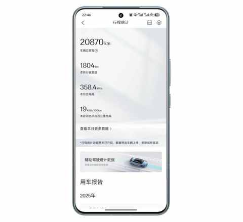
开车变多，带来的直接影响是，感受的增多，所以写了不少选车用车方面的文章，其中有一篇过 10w+。
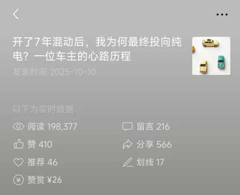
开了7年混动后，我为何最终投向纯电？一位车主的心路历程
还有一篇讲电车自驾游体验和感受的，是 9w多的阅读量。
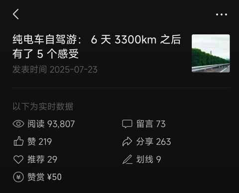
纯电车自驾游： 6 天 3300km 之后有了 5 个感受
可能开车也是一个输入的方式吧，用速度比较快的方式，来行万里路。
三、结语
所以，回望这个11月，日更92天的坚持、月跑300公里的汗水、自己动手修好冰箱的成就感、在合肥马拉松赛道上的奔跑、以及车载里程表上突破2万公里的数字……
它们看似不同，似乎都指向同一个真相：生活不会辜负每一个认真的普通人。
我用这些笨拙又真诚的“第一次”，伴着自己平稳地度过了35岁的11月。
这，或许就是对抗时间最自然最有力的方式。
近期文章
日更，是不断了解自己的过程
90年，35岁，日更90天，有了这 3 个意外收获
备战首马！月跑量即将首次突破300公里，我的5点真实感悟
听播客5年，日均108分钟：这3个收获，让我认识到“声音”的力量
小米高端化成了吗？拿15S Pro当主力机4个月，我有这5个真实感受
嘿！还记得“为QQ等级挂机”的岁月吗？来晒晒你的等级吧！
11 个月，开极氪7X跑两万公里，用车总结及好物分享
一个长居省外中年人的合肥印象：记2025的年第4次合肥行
中年减肥成功2年后，才发现运动形式真不重要，守住这3点才能不反弹！
我的两个配图利器：两个APP强强联合，实现1+1 > 2的视觉升级
别慌！和所有Intel版Mac用户共享：3个让我们继续用的理由和2个续命秘籍